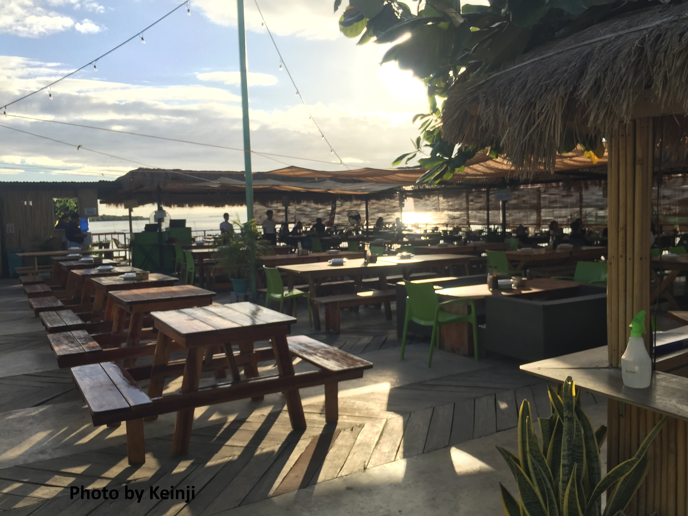

Photo by Keinji
LANTAW FLOATING NATIVE RESTAURANT
This is the main reason why people flock to Lantaw Floating Native Restaurant in Cordova, Cebu. Lantaw is a Bisaya word that translates to “look out”. It is a floating restaurant located in Day-as, Cordova where you can enjoy having an intimate dinner with your family while watching the sun set in the horizon with the calming sound of seawater surrounding the restaurant.
Lantaw Floating Native Restaurant is more than just a place to eat. It’s a unique dining experience that combines delicious food with breathtaking views and a peaceful atmosphere.